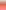

<!DOCTYPE HTML PUBLIC "-//W3C//DTD HTML 4.01//EN"
        "http://www.w3.org/TR/html4/strict.dtd">
<html>
<head>
	<title>Outliers</title>
    <link rel="stylesheet" type="text/css" href="../style/OxCal.css">
 <script type="text/javascript" src="ocp_utils.js"></script>
 <script type="text/javascript">
 <!--

  var model=parent.model;
  var ocd=parent.ocd;

  function graph(percent,line,width)
  {
   var left,right,linewidth=3;
   width-=linewidth;
   if(isNaN(percent))
   {
    left=0;
   }
   else
   {
    left=Math.round((percent/100)*width);
    if(left>width){left=width;};
    if(left<0){left=0;};
   };
   if(isNaN(line))
   {
    line=0;
   }
   else
   {
    line=Math.round((line/100)*width);
    if(line>width){line=width;};
    if(line<0){line=0;};
   };
   right=width-left;
//   document.write(percent+", "+left+", "+right+", "+line+", "+width);
//   return;
   if(line>left)
   {
    document.write("");
   }
   else
   {
    document.write("");
   };
  };
  function addToCsv(item)
  {
   switch(typeof(item))
   {
   case "string":
    parent.filecontent+='"'+item+'"'+',';
    break;
   default:
    parent.filecontent+=item+',';
    break;
   };
  };
  function skipCsv()
  {
   parent.filecontent+=',';
  };
  function endCsv()
  {
   parent.filecontent+='\n';
  };

  function drawTable()
  {
   var i;
   document.writeln("<table class='object'>");
   document.writeln("<tr><th>Element<\/th>"
   +"<th>Ok <\/th>"
   +"<th>Outlier <\/th>"
   +"<th>Prior<\/th><th>Posterior<\/th><th>Model<\/th><th>Type<\/th><\/tr>");
   parent.filecontent='"Element","Prior","Posterior","Model","Type"\n';
   for(i=0;i<model.proportional.length;i++)
   {
     if(model.proportional[i].outlier_possible||model.proportional[i].outlier_model)
     {
       document.write("<td>"+ocd[model.proportional[i].param[0]].name+"<\/td>");
       addToCsv(ocd[model.proportional[i].param[0]].name);
       document.write("<td colspan=2>");
       graph(100*(1-model.proportional[i].outlier_post),
         100*(1-model.proportional[i].outlier_prior),300);
       document.write("<\/td>");
       document.write("<td>"+toFixxed((100*model.proportional[i].outlier_prior),0)+"<\/td>");
       addToCsv(100*model.proportional[i].outlier_prior);
       document.write("<td>"+toFixxed((100*model.proportional[i].outlier_post),0)+"<\/td>");
       addToCsv(100*model.proportional[i].outlier_post);
       document.write("<td>"+ ocd[model.proportional[i].outlier_model].name+"<\/td>");
       addToCsv(ocd[model.proportional[i].outlier_model].name);
       document.write("<td>"+ model.proportional[i].outlier_type+"<\/td>");
       addToCsv(model.proportional[i].outlier_type);
       document.writeln("<\/tr>");
       endCsv();
     };
   };
   document.writeln("<\/table>");
};
  
 //-->
 </script>
</head>
<body>
  <script type="text/javascript">
  if(!parent.mainMode)
  {
   document.writeln("<h1>OxCal Outlier Analysis<\/h1>");
   document.writeln("<hr\/>");
   if(parent.source!="ocp_null.js")
   {
    document.write("<div class='filename'>");
    document.write(parent.source.replace(".js",""));
    document.writeln("<\/div>");
   };
  };
  </script>
    <script type="text/javascript">
drawTable();
</script>

</body>
</html>
